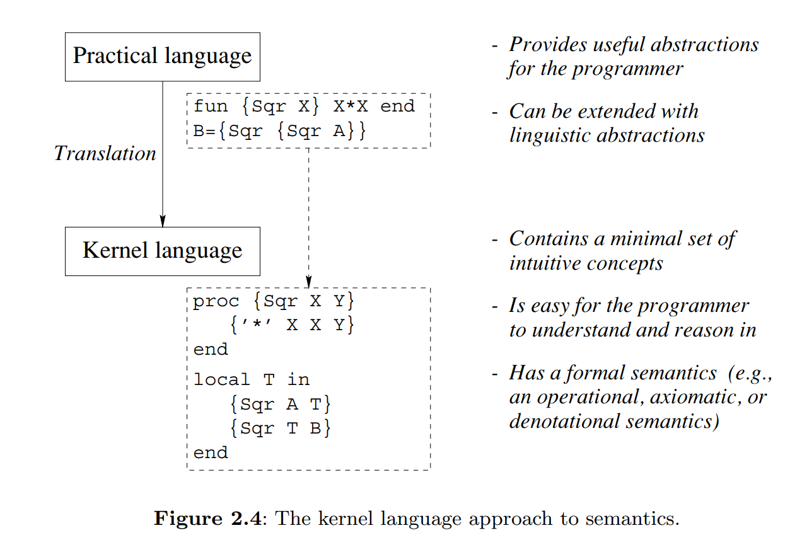
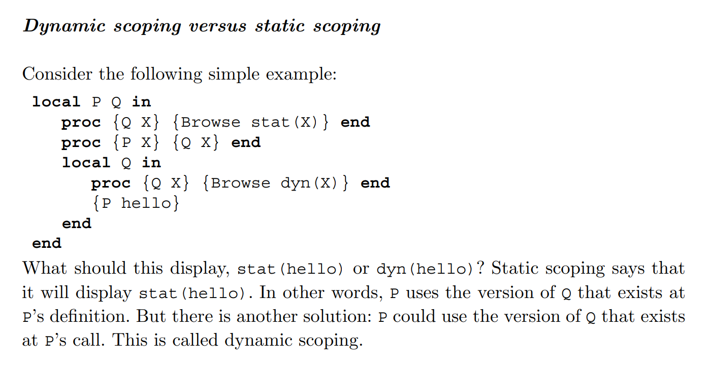
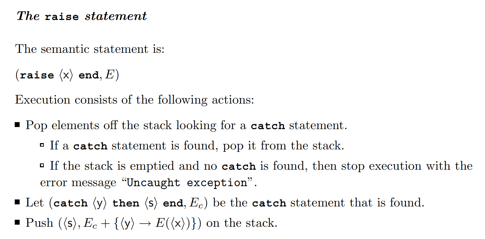
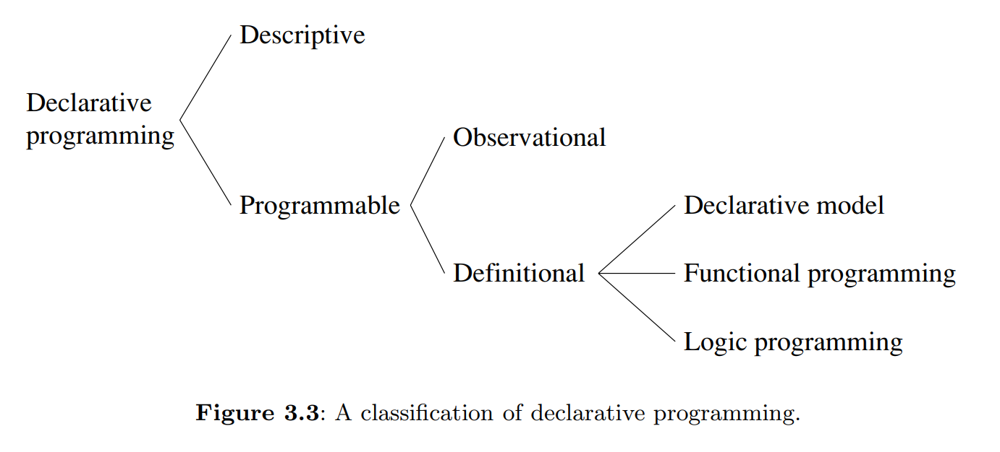
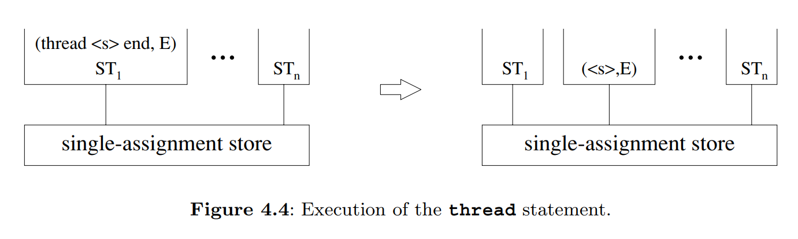
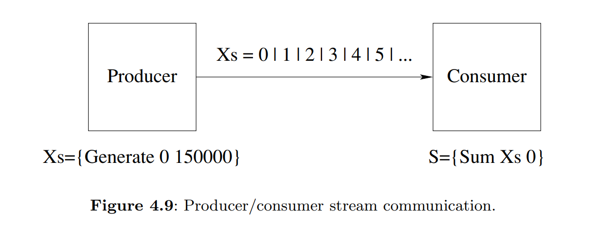
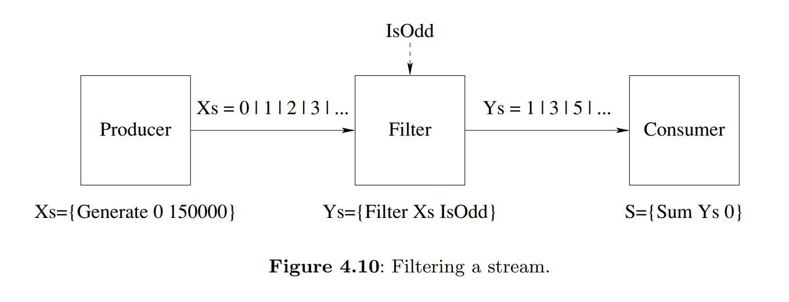
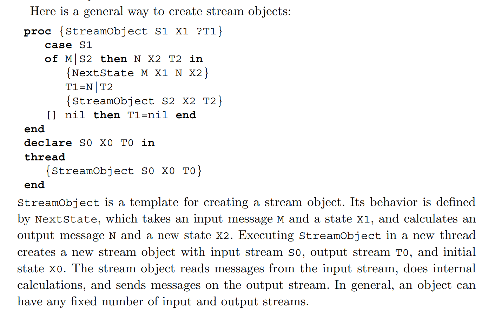
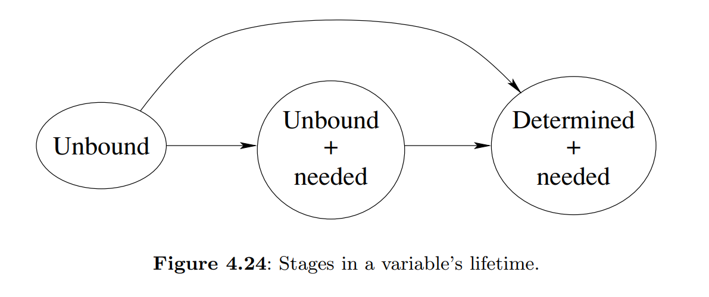
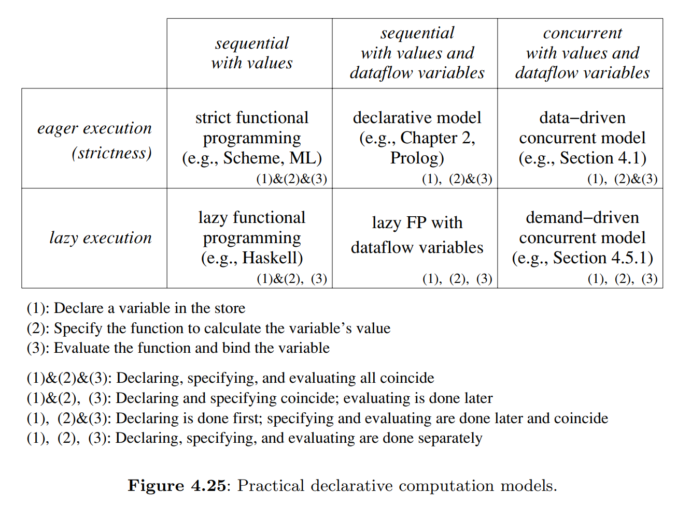

💬 TDT4165 - Programming Languages
371 pages.
Links
0 Preface (p. i-xxvii)
| Concept | Definition |
|---|---|
| Computation model | A formal system that defines how computations are done. (Data types, operations, and a programming language) |
| Programming model | What the programmer needs: the programming techniques and design principles made possible by the computation model. |
| Kernel language | A simple core language of a computation model |
| Creative extension principle | A new concept is added when programs become complicated for technical reasons unrelated to the problem being solved |
| Programming | The act of extending or changing a system’s functionality |
| Computation model | Languages |
|---|---|
| Object-oriented | Java, Smalltalk |
| Functional | Haskell, Standard ML |
| Logic | Prolog, Mercury |
| Concurrent | Erlang |
In the kernel language approach, a practical language is translated into a kernel language that consists of a small number of programmer-significant elements. The rich set of abstractions and syntax is encoded in the kernel language, giving insight into what the language does. Simple formal semantics allow reasoning about program correctness and complexity. This is a language-independent way to study programming.
1 Introduction to Programming Concepts (p. 1-23)
Variables, Functions and Lists
The declare statement creates a new store variable and makes the variable identifier refer to it. There are two concepts hiding behind the word “variable”:
- The identifier.
- The store variable.
The fun statement defines a function. The variable Fact is bound to the function. The function has one argument N, which is a local variable.
declare
fun {Fact N}
if N==0 then 1 else N*{Fact N-1} end
end
A list [1 2 3] is a chain of links HEAD|TAIL, where each link contains two things: one list element and a reference to the rest of the chain L = 1|[2 3]. Here, L.1 is 1 and L.2 is [2 3]. The empty list is nil. A list of one item is 1|nil.
declare
L = [5 6 7 8]
case L of H|T then {Browse H} {Browse T} end
In the preceding code, the case instruction does pattern matching.
Lazy Evalution and Concurrency
In lazy evaluation, a calculation is done only when the result is needed (opposed to standard, eager evaluation). This enables calculation with seemingly infinite data structures without any loop boundary conditions.
fun lazy {Ints N}
N|{Ints N+1}
end
The ability to pass functions as arguments and return values is known as higher-order programming.
A concurrent program has several independent activities, each of which executes at its own pace. We introduce concurrency by creating threads with the thread instruction. Thread execution is interleaved.That is, threads take turns each executing a little.
With dataflow behavior, an operation that tries to use a variable that is not yet bound will wait for it to be bound. Two nice properties of dataflow are (1) calculations work correctly independent of how they are partitioned between threads. (2) calculations are patient: they do not signal errors, but simply wait.
Explicit State, Objects, Classes and Records
Explicit state may be achieved with memory cells:
declare
C = {NewCell 0}
C := @C+1
{Browse @C}
This further enables objects. In the following, the cell is referenced by a local variable, i.e. it is encapsulated.
declare
local C in
C = {NewCell 0}
fun {Bump}
C := @C+1
@C
end
fun {Read}
@C
end
end
As long as the interface to the counter object is the same, the user program does not need to know the implementation. The separation of interface and implementation is the essence of data abstraction. A program that uses a counter will work correctly for any implementation as long as the interface is the same. This property is called polymorphism.
To instantiate multiple objects, we may create an object factory, i.e. a class.
declare
fun {NewCounter} C Bump Read in
C = {NewCell 0}
fun {Bump}
C:=@C+1
@C
end
fun {Read}
@C
end
counter(bump:Bump read:Read)
end
The Bump and Read functions are grouped together into a record, a compound data structure that allows easy access to its parts. The record counter(bump:Bump read:Read) is characterized by its label counter and by its two fields, called bump and read. These are accessible with the . (dot) operator.
Programming with classes and objects is called object-based programming. Adding one new idea, inheritance, to object-based programming gives object-oriented programming.
Nondeterminism and Atomicity
With both concurrency and state, we introduce nondeterminism. An observable nondeterminism is sometimes called a race condition. Programming with concurrency and state together is largely a question of mastering the interleavings.
An operation is atomic if no intermediate states can be observed. A lock has the property that only one thread at a time can be executing inside.If a second thread tries to get in, then it will wait until the first gets out. Therefore what happens inside the lock is atomic.
Computation Model Descriptions
| Computation model | Description |
|---|---|
| Declarative model | Declarative programs define mathematical functions.They are the easiest to reason about and to test. |
| Concurrent declarative model | Adding dataflow concurrency gives a model that is still declarative but that allows a more flexible, incremental execution. |
| Lazy declarative model | Adding laziness allows calculating with potentially infinite data structures.This is good for resource management and program structure. |
| Stateful model | Adding explicit state allows writing programs whose behavior changes over time.This is good for program modularity. |
| Object-oriented model | Object-oriented programming is a programming style for stateful programming with data abstractions. Enables powerful techniques such as polymorphism and inheritance. |
| Shared-state concurrent model | Gives the advantages of both the stateful and concurrent models, but should be programmed carefully. |
2 Declarative Computation Model (p. 29-106)
| Concept | Definition |
|---|---|
| Declarative programming | Evaluating functions over partial data structures (stateless programming) |
2.1 Defining Practical Programming Languages

| Concept | Definition |
|---|---|
| Grammar | A set of rules that defines how to make ‘sentences’ (or statements) out of ‘words’ (or tokens). |
| Tokenizer / Lexical analyzer | A program that accepts a sequence of characters and returns a sequence of tokens |
| Parser | A program that accepts a sequence of tokens and returns a parse tree |
A terminal symbol is simply a token. A nonterminal symbol represents a sequence of tokens.
Context-free grammars can be ambiguous, i.e., there can be several parse trees that correspond to a given token sequence. The usual approach is to add two conditions, precedence and associativity.
The semantics of a language defines what a program does when it executes. There are four widely used approaches to language semantics: (1) operational, in terms of an abstract machine, (2) axiomatic, a relation between input and output, (3) denotational, functions over an abstract domain, (4) logical, model of a logical theory.

There are two phases to defining a linguistic abstraction. First, define a new grammatical construct.Second, define its translation into the kernel language.
Syntactic sugar does not provide a new abstraction, but just reduces program size and improves program readability.
2.2 The single-assignment store
Variables in the single-assignment store are called declarative variables (or dataflow variables). Once bound, the variable cannot be bound to another value.
| Concept | Definition |
|---|---|
| Value store | All variables are bound to values. Single assignment. |
| Single-assignment store | Variables are bound to a value or unbound. Single assignment. |
| Cell store | Variables may be rebound. |
| Variable identifier | The variable names in program source code |
| Partial value | A data structure that may contain unbound variables. |
In the declarative model, creating a variable and binding it are done separately. What happens if we try to use the variable before it is bound? In Oz, execution waits until the variable is bound and then continues.
2.3 Kernel language
There are two basic approaches to typing, namely dynamic and static typing. In static typing, all variable types are known at compile time. In dynamic typing, the variable type is known only when the variable is bound. The declarative model is dynamically typed.
Basic types are numbers, atoms, booleans, records, tuples, lists, strings and procedures.
2.4 Kernel language semantics

| Concept | Definition |
|---|---|
| Single-assignment store | A set of store variables, potentially with value assignments |
| Environment | A mapping from variable identifiers to entities in |
| Semantic statement | where is a statement and is an environment |
| Execution state | where is a stack of semantic statements and is a SAS |
| Computation | A sequence of execution states |
A program is simply a statement . The initial execution state is At each step, the first element of is popped and execution proceeds according to the form of the element. A semantic stack can be in one of three run-time states: runnable (can do a computation step), terminated (empty), or suspended (not empty, but it cannot do any computation step).
Suspendable statements have an activation condition. They wait for unbound variable identifiers to be bound.
2.5 Memory management
Consider a recursive procedure with just one recursive call which happens to be the last call in the procedure body.We call such a procedure tail-recursive. We will show that the abstract machine executes a tail-recursive procedure with a constant stack size.This property is called last call optimization or tail call optimization.
The semantic stack and the reachable part of the store are together called the active memory.
Without garbage collection (GC) There are two kinds of program error that can occur:
- Dangling reference. This happens when a block is reclaimed even though it is still reachable.The system will eventually reuse this block.This means that data structures will be corrupted in unpredictable ways, causing the program to crash.
- Memory leak. This happens when a block is not reclaimed even though it is unreachable.The effect is that active memory size keeps growing indefinitely until eventually the system’s memory resources are exhausted.
2.6 From kernel language to practical language
2.7 Exceptions

2.8 Advanced topics
3 Declarative Programming Techniques (p. 111-230)
A declarative operation is independent (does not depend on any execution state outside of itself), stateless (has no internal execution state that is remembered between calls), and deterministic (always gives the same results when given the same arguments).

3.1 What is declarativeness?
Intuitively, it is programming by defining the what (the results we want to achieve) without explaining the how (the algorithms, etc., needed to achieve the results).
Given any statement in the declarative model, partition the free variable identifiers in the statement into inputs and outputs. Then, given any binding of the input identifiers to partial values and the output identifiers to unbound variables, executing the statement will give one of three results: (1) some binding of the output variables, (2) suspension, or (3) an exception. If the statement is declarative, then for the same bindings of the inputs, the result is always the same.
3.2 Iterative computation
3.3 Recursive computiation
3.4 Programming with recursion
3.4.2.4 Converting recursive to iterative computations
This may be done by providing some state to the next recursive call, instead of doing the computation after the recursive call.
3.4.2.5 Correctness with state invariants
Induction.
3.5 Time and space efficiency
3.6 Higher-order programming
There are four basic operations that underlie all the techniques of higher-order programming:
- Procedural abstraction: the ability to convert any statement into a procedure value.
- Genericity: the ability to pass procedure values as arguments to a procedure call.
- Instantiation: the ability to return procedure values as results from a procedure call.
- Embedding: the ability to put procedure values in data structures.
ForAcc and ForAllAcc are the workhorses of the declarative model.They are both defined with a variable Mid that is used to pass the current state of the accumulator to the rest of the loop.
FoldL and FoldR, which folds from the left and right respectively, are accumulators.
3.7 Abstract data types
3.8 Nondeclarative needs
3.9 Program design in the small
4 Declarative Concurrency (4.1-4.5) (p. 233-304)
A program in the declarative concurrent model has no observable nondeterminism, if the program does not try to bind the same variable to incompatible values.
4.1 The data-driven concurrent model
- We add threads and the single instruction
thread <s> end. A thread is simply an executing statement, i.e., a semantic stack. This is all we need to start programming with declarative concurrency. - The second step extends the model with another execution order. We add by-need triggers and the single instruction
{ByNeed P X}. This adds the possibility to do demand-driven computation, or lazy execution.

Failure is an all-or-nothing property: if a declarative concurrent program results in failure for a given set of inputs, then all possible executions with those inputs will result in failure. Often we would like to continue execution instead of terminating, perhaps to repair the error or simply to report it.A natural way to do this is by using exceptions. However, it is important to realize that execution after raising the exception is no longer declarative! If we want execution to become declarative again after a failure, then we have to hide the nondeterminism. This is the responsibility of the programmer.
Each browser call is given its own part of the browser window to display its argument. If the argument contains an unbound variable that is bound later, then the display will be updated when the variable is bound. Otherwise, it will display '_'.
4.2 Basic thread programming
If using concurrency lets your program have a simpler structure, then use it without hesitation.But keep in mind that even though threads are cheap, sequential programs are even cheaper.
For scheduling, The Mozart system uses Round Robin with a hardware timer.
Threads are intended for cooperative concurrency, not for competitive concurrency. Cooperative concurrency is for entities that are working together on some global goal. On the other hand, competitive concurrency is for entities that have a local goal, managed by the operating system in terms of a concept called a process.
4.3 Streams
The most useful technique for concurrent programming in the declarative concurrent model is using streams to communicate between threads. A stream is a potentially unbounded list of messages, i.e., it is a list whose tail is an unbound dataflow variable. Sending a message is done by extending the stream by one element.
 
We can put a third stream object in between the producer and consumer. We call it a transducer. In general, a sequence of stream objects each of which feeds the next is called a pipeline.
The simplest flow control is called demand-driven concurrency, or lazy execution. In this technique, the producer only generates elements when the consumer explicitly demands them. The simplest way to do this is to use dataflow.
But lazy execution also has a serious problem.It leads to a strong reduction in throughput. A bounded buffer is a transducer that stores elements up to a maximum number, say n. The producer is allowed to get ahead of the consumer, but only until the buffer is full.
We conclude this discussion by remarking that eager and lazy execution are just extreme cases of a bounded buffer. Execution is eager when the buffer has infinite size. Execution is lazy when the buffer has zero size.

4.4 Using the declarative concurrent model directly
4.5 Lazy execution
Lazy functions are not executed when they are called. They do not block either.
To do demand-driven concurrency, we add one instruction, ByNeed, to the kernel language.
The statement {ByNeed P Y} has the same effect as the statement thread {P Y} end, except for scheduling. Both statements call the procedure P in its own thread with argument Y. The difference between the statements is when the procedure call is executed. For thread {P Y} end, we know that {P Y} will always be executed eventually. For {ByNeed P Y}, we know that {P Y} will be executed only if the value of Y is needed.
The browser does create a need for a value.
A by-need trigger is a pair of a dataflow variable and a one-argument procedure .


9 Relational Programming (9.1-9.3, 9.7) (p. 621-641, 660-671)
9.1 The relational computation model
9.2 Further examples
9.3 Relation to logic programming
Now we can state more precisely what a logic program is. For our purposes, a logic program consists of a set of axioms in the first-order predicate calculus, a sentence called the query, and a theorem prover, i.e., a system that can perform deduction using the axioms in an attempt to prove or disprove the query. Performing deductions is called executing the logic program.
9.7 The Prolog language
The Prolog computation model has a layered structure with three levels:
- The first level is a simple theorem prover that uses Horn clauses and that executes with SLDNF resolution
- The second level consists of a series of extralogical features that are used to modify and extend the resolution-based theorem prover.
- The third level consists of the assert/1 and retract/1 operations, which provide explicit state.
One way to write good Prolog programs is to follow these three steps:
- Write the program as if it were a statement in pure logic.
- Rewrite (part of) the program for efficiency, taking care not to break the logical semantics.
- Add extralogical operations where they are needed.
12 Constraint Programming (p. 749-773)
Constraint programming consists of a set of techniques for solving constraint satisfaction problems.A constraint satisfaction problem, or CSP, consists of a set of constraints on a set of variables.A constraint, in this setting, is simply a logical relation, such as “X is less than Y” or “X is a multiple of 3.” The first problem is to find whether there exists a solution, without necessarily constructing it. The second problem is to find one or more solutions.
12.1 Propagate-and-search
The propagate-and-search approach is based on three important ideas:
- Keep partial information.
- Use local deduction.
- Do controlled search.